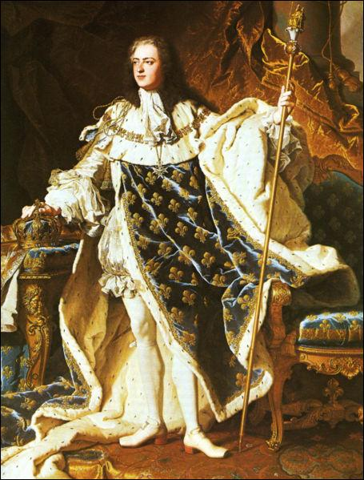
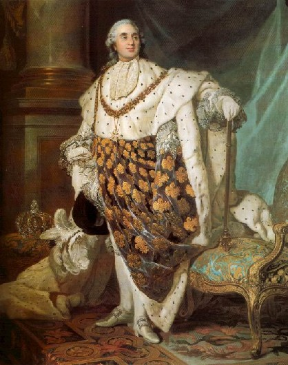

Tout sur
Louis 13
Vie de Louis XIII
27 septembre 1601 au château de Fontainebleau et décédé le 14 mai 1643 au château neuf de Saint-Germain-en-Laye, est roi de France et de Navarre entre 1610 et 1643. Il est le fils de Henri IV et de Marie de Médicis.
Son règne est marqué par l’affaiblissement des grands et des protestants, la lutte contre la maison de Habsbourg et l'affirmation de la domination militaire française en Europe. L’image de ce roi est inséparable de celle de son principal ministre, le cardinal de Richelieu.
Il est le père du roi Louis XIV et de Philippe, fondateur de la maison Orléans dont est issu le roi Louis-Philippe Ier.
Article 2
Vie de Louis XIV
5 septembre 1638 à Saint-Germain-en-Laye et mort le 1er septembre 1715 à Versailles, est un roi de France et de Navarre. Il règne sur le royaume de France du 14 mai 1643 à sa mort le 1er septembre 1715.
Louis-Dieudonné monte donc sur le trône au décès de son père Louis XIII, le 14 mai 1643, quelques mois avant son cinquième anniversaire. Il est le 64e roi de France, le 44e roi de Navarre et le troisième des rois de la famille Bourbon. Son règne de 72 ans est l’un des plus longs de l'histoire de l'Europe.
Il marque l'apogée de la construction séculaire d'un absolutisme de droit divin. Après une minorité troublée par la révolte de la Fronde de 1648 à 1653, Louis XIV assume personnellement le gouvernement à la mort du cardinal Mazarin en 1661 en ne prenant plus de ministre principal. Son autorité se déploie avec la fin des grandes révoltes nobiliaires, parlementaires, protestantes et paysannes qui avaient marqué les décennies précédentes. Le monarque impose l'obéissance à tous les ordres et contrôle les courants d'opinion y compris littéraires ou religieux, ainsi il décide de réprimer le jansénisme à partir de 1660 et de révoquer l'édit de Nantes en 1685. Louis XIV construit un État centralisé, où son rôle direct est encore accentué après le décès des ministres Colbert en 1683 et Louvois en 1691.
Article 3

Vie de Louis XV
Louis XV, dit le « Bien-Aimé », né le 15 février 1710 à Versailles et mort le 10 mai 1774 à Versailles, duc d'Anjou jusqu'au 8 mars 1712, dauphin de France du 8 mars 1712 au 1er septembre 1715, est un roi de France et de Navarre, membre de la Maison de Bourbon, dont le règne dure de 1715 à 1774.
Orphelin à l'âge de 2 ans, succédant à son arrière-grand-père Louis XIV à l'âge de cinq ans, il voit son pouvoir alors délégué à son grand-oncle, le duc d'Orléans, proclamé « régent du Royaume » le 2 septembre 1715, jusqu'au 15 février 1723, date de l'entrée du jeune roi dans sa treizième année, où il prend officiellement le contrôle du gouvernement.
Article 4

Vie de Louis XVI
Louis XVI, né le 23 août 1754 à Versailles et guillotiné place de la Révolution à Paris le 21 janvier 1793, est roi de France et de Navarre de 1774 à 1791 puis roi des Français de 1791 à 1792.